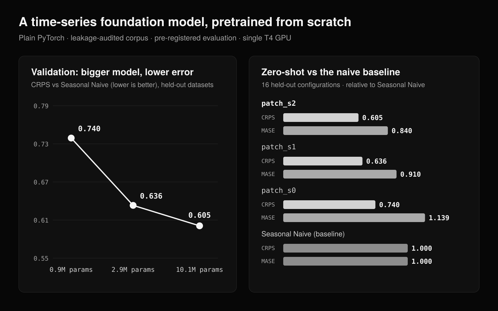

A time-series foundation model, from scratch
In plain English
A model that predicts what comes next in any series of numbers, from store sales to electricity demand, with an honest range instead of a single guess.
- The idea A chatbot learns language from huge amounts of text. This model learns patterns from 443,258 real-world series of numbers, so it can forecast ones it has never seen.
- Built from zero I wrote every part myself, from how the numbers go in to how the model trains, instead of downloading someone else's model.
- The leak I caught I checked 77 public datasets and found that a popular training collection contained the data used to grade models: like seeing the exam answers in advance. I removed 801 overlapping series before training.
- The result On a sealed final test, its forecast error was 0.688× that of a standard statistical method: about 31% lower, and the likely range, 0.624 to 0.757, stays clearly below 1. A smaller version did worse, and that result is published too.
A forecasting foundation model built from first principles, and the audit that caught a public benchmark corpus leaking its own test data.
What it provesA transformer trained from scratch is better than upstream AutoARIMA on the frozen test: CRPS 0.688×, 95% CI [0.624, 0.757].
Test 0.688× upstream AutoARIMA. patch_s2, one seed, 97 test configurations. 95% CI [0.624, 0.757], better. Validation CRPS was 0.605× Seasonal Naive.
Decoder-only transformer, tokenizers, training loop and sampling in plain PyTorch. Pretrained on a pinned corpus plus synthetic Gaussian-process series. Scored with the official GIFT-Eval scoring code on data held out of training.
Stack Python, PyTorch, pytest, GitHub Actions

Problem
A foundation model's score means something only if the benchmark never leaked into its training data.
Time-series foundation models are pretrained on many series and asked to forecast new ones with no further training. The evaluation also has to be fixed before anyone sees the scores.
The audit
The public corpus described as non-leaking contained copies of benchmark series, some inside the test windows.
Pretraining uses 443,258 series across 77 datasets (1,087,018,264 points) from GiftEvalPretrain. Every raw file is pinned by a SHA-256 fingerprint. A content check compared each pretraining series with every GIFT-Eval series, at native frequency and as daily aggregates, after rescaling.
All 801 flagged series were removed, including look-alikes that turned out to be straight-line gaps. A re-run on the final corpus finds no matches.
Method
- Model. Decoder-only transformer with pre-norm RMSNorm, rotary positions, SwiGLU and a key/value cache, written without a model library. Two tokenizers: mean-scaled quantization with cross-entropy, and patches with a non-crossing quantile head.
- Training. Mixed precision (fp16) on one Colab T4, gradient accumulation, cosine schedule, resumable checkpoints. Profiling found GPU scan kernels on the training hot path; they were removed from it.
- Evaluation. GluonTS, the scorer GIFT-Eval uses, checked by reproducing Seasonal Naive on every official metric. Splits, metrics, baselines and the decision rule were tagged in git before test scoring ().
Results
Test split: patch_s2
Scored once from its checkpoint, one seed, 97 configurations. CRPS 0.688× upstream AutoARIMA, 95% [0.624, 0.757], better. Validation on 16 configurations was 0.605× Seasonal Naive.
patch_s2, one seed, 97 configurations. CRPS versus upstream AutoARIMA, 95% CI [0.624, 0.757], better.
Validation: bigger model, lower error
Zero-shot on 16 configurations from datasets held out of pretraining. The largest run, patch_s2, has CRPS 0.605× and MASE 0.840 relative to Seasonal Naive. Validation loss falls with compute as a power law with exponent 0.058 (95% interval 0.051 to 0.064) across 3 sizes.
Test split: a smaller CPU model, scored once
A separate, pre-registered CPU study trained a smaller model (833,440 parameters), committed its weights, and scored the official test split once: 97 configurations, 3 seeds.
Its CRPS is 1.109× Seasonal Naive, no detectable difference, and 1.217× AutoARIMA, worse. Split-conformal intervals, fit on validation only, overshot: at the 80% level coverage went from 0.642 (raw quantiles) to 0.932, and CRPS got worse.
The repository has no distillation result and no distillation template, so this slot stays empty. None is shown.
For context, published models do better on the same test split. Recomputed from upstream's committed result files (repository README, published reference points): CRPS 0.490× Seasonal Naive for TimesFM-2.5 and 0.502× for FlowState-9.1M, against 0.628× for patch_s2, one seed. patch_s2 was pretrained from scratch on one Colab T4.
Volatility study
Daily realized volatility of BTC and ETH, forecast 22 days ahead, pre-registered separately. HAR-RV, a standard volatility model, beats a random walk. These are forecast scores for the baselines only; the transformer was not run here, and no trading result is claimed.
Does it help an investor?
Not on this test. The small public model's risk forecasts were less accurate than the standard method, and a portfolio built on them ran at higher risk.
This is where the forecasting model meets the investing project. At each month-end, six forecasters predict next month's volatility of each of 30 US industries: four standard methods, and this model both zero-shot and fine-tuned. Each makes 24,030 forecasts over 801 months, the same out-of-sample window as the portfolio study. The standard to beat is HAR, a regression on each industry's own recent volatility. The rule for what counts as helping (more accurate than HAR, and a lower-risk portfolio) was committed before any forecast was scored.
- Accuracy, the small public model (833,440 parameters). Fine-tuned, its quantile loss was 1.033× HAR's (95% interval [1.013, 1.053]): worse. Zero-shot it was 1.138× ([1.102, 1.176]): worse. Fine-tuning restarts every five years on past data only; at 0 of 14 refits the validation years preferred the untouched model. Its other pretraining seeds give the same verdicts; they are in the table.
- Where that leaves it (described after the test, not pre-registered). Fine-tuned, its loss was 0.962× that of RiskMetrics, the industry's usual method ([0.920, 1.006]: no detectable difference), 0.882× that of simply repeating last month (better), and 0.907× its own zero-shot loss (better). Fine-tuning on past data helped, but not enough to reach HAR.
- What the forecasts are worth. One long-only minimum-variance rule is fed by each forecaster in turn. On this model's forecasts it ran at 12.2% a year against 12.1% on HAR's (+1.6%, = 7.53): higher risk.
- The ceiling. A perfect forecast of next month's volatilities would have run the same rule at 10.9% a year (−11.6% against HAR's: lower risk). That is all the room any forecaster has here. The market itself ran at 15.9%.
- The headline model (10,083,392 parameters) has not been run on this test. Its weights are not public yet. The protocol names it by hash and scores it without change when they are.
The study lives in the Deep Portfolio Constructor repository: protocol, every table, code and 16 tests. Volatility is measured from daily returns; the industries are Kenneth French's.
Limits
The test headline is 0.688× upstream AutoARIMA. The 0.605× figure is validation only: 16 configurations, one seed.
The test-scored CPU model does not beat AutoARIMA, and its CRPS is not distinguishable from Seasonal Naive.
Raw intervals undercover: the validation model's nominal 80% intervals cover 65% of outcomes.
The T4 budget cut the plan: three sizes instead of four to six, the second tokenizer trained but not scored, one seed.
The leakage check finds exact and rescaled copies, not noisy or resampled ones.
Checks
189 automated tests run in GitHub Actions. A test fails if a generated document states a number that is not in the committed results. A tiny configuration runs the pipeline end to end on every push.
Python 3.12, PyTorch, NumPy, pandas, Parquet, GluonTS, statsforecast, pytest, Hypothesis, ruff, mypy, uv, GitHub Actions, Colab
Figures on this page are read from data/projects.json.